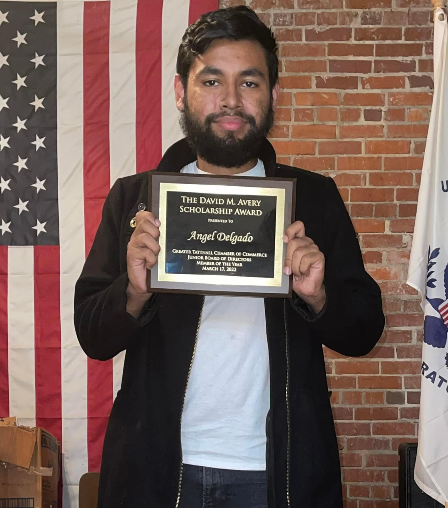

Tattnall County High School
Hello everyone! My name is Angel Delgado and I grew up in a small country area around Lyons, Georgia. My current major is Information Technology - Cybersecurity, and I am very interested in becoming an ethical hacker! I am currently located in the Statesboro campus, despite me still taking this class online. As far as my future career plans go I am still kind of unsure because I highly doubt graduating and using the Cybersecurity degree to get a job will be easy. Which brings me to the next point, I don't have any research experience but I do have work experience, I am currently working in the Dining Commons here on the Statesboro campus, but I am applying to other places that will help me learn any IT stuff. This is so that I can get use to being in the IT "field" and I can use that on my resume so that I have a higher chance of being accepted when I do apply for a job that needs an ethical hacker.
Currently my hobbies are playing card games with my friends as well as learning more on how to use Kali Linux by playing this website game, OverTheWire: Bandit.
5 Interesting Things About Me: